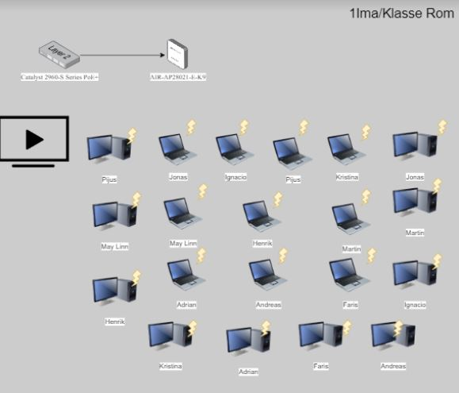

Teknologiforståelse
Teknologiforståelse
- planlegge og gjennomføre sanntidsproduksjoner
- administrere brukerenheter og koble dem til sentrale administrasjonsplattformer
- gjennomføre og dokumentere arbeid i tråd med gjeldende bestemmelser
for helse, miljø og sikkerhet
- reflektere over og beskrive hvordan media påvirker mennesker og deres medievaner
- utforske og beskrive hvordan teknologi kan formidle nye uttrykk og gi nye opplevelser
- beskrive, utforske og konfigurere datanettverk med egne subnett
- utforske og beskrive digitale trusler, verdier og sårbarheter i samfunnet
- kjenne til og anvende bransjefaglige metoder og relevant utstyr i produksjon
- vurdere, anbefale og kvalitetssikre tiltak som reduserer risiko for uønsket spredning av data
- gjøre rede for hvordan man behandler informasjon og personopplysninger i tråd med gjeldende regelverk
- gjøre rede for hvordan hensynet til bærekraft påvirker anskaffelse, drift og avhending av utstyr og materiell
- gjøre rede for hvordan internett fungerer, og hvordan det blir brukt til kommunikasjon og lagring
